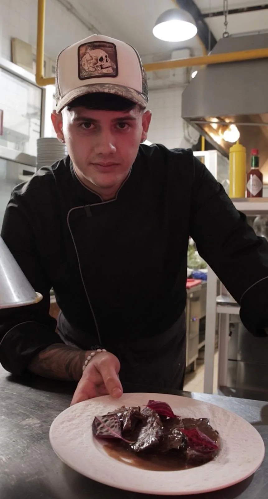

La nostra cucina
Alessandro, il Capitano ai fornelli
Il simbolo della nostra osteria è un galeone e in sala trovate un vecchio timone. Per questo in cucina Alessandro lo chiamiamo tutti il Capitano. È lui che guida la brigata e prepara per voi i piatti della nostra tradizione.


10anni in cucina
5anni da Corsetti
26anni di età
Dieci anni di cucina
Alessandro ha 26 anni e lavora tra i fornelli da quando ne aveva 16. Da cinque anni è lo chef di Corsetti. Si è specializzato in diverse tecniche di cottura, che usa ogni giorno per dare valore alla nostra cucina romana di famiglia. Qui da noi non esiste nulla di precotto: prepariamo tutto al momento, proprio come a casa.
Cosa dite di lui
“Mia moglie celiaca contenta di essere stata seguita da un giovane chef, Alessandro di grande attenzione e professionalità oltre a gentilezza. È venuto personalmente al tavolo a confrontarsi con lei.”“Ho provato la cacio e pepe preparata dagli chef Eimy e Alessandro, davvero notevole ,fatta con ingredienti di prima qualità.”